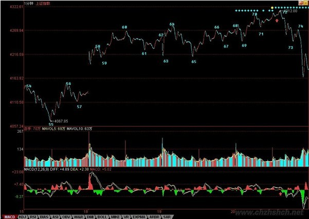
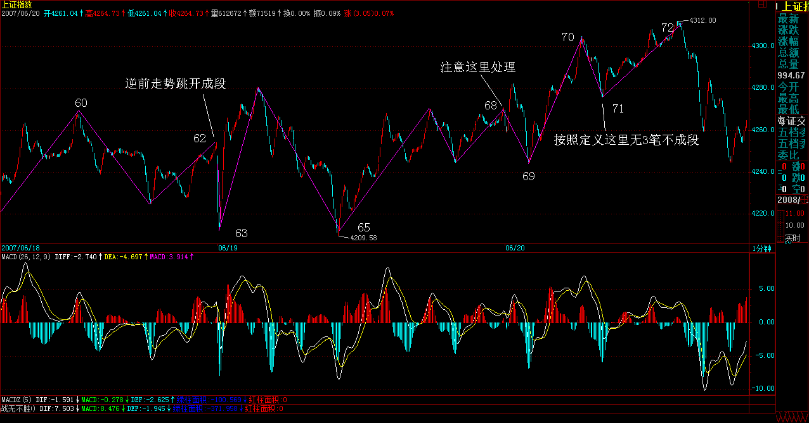
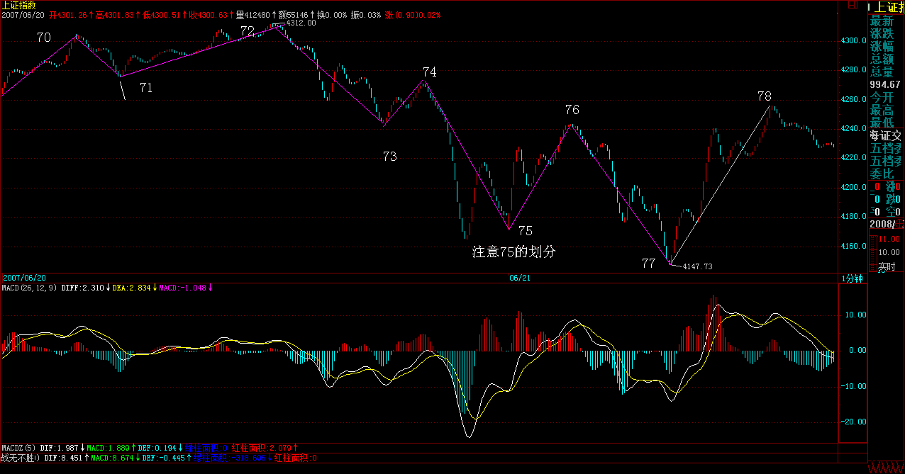
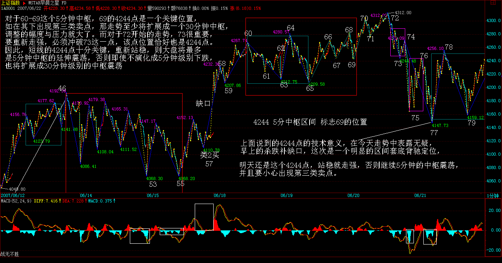
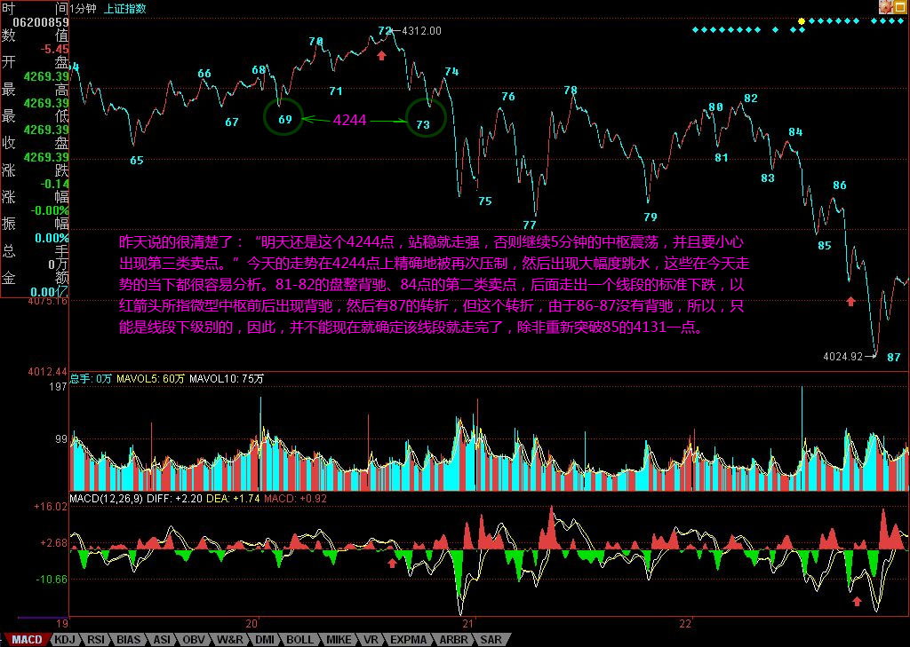
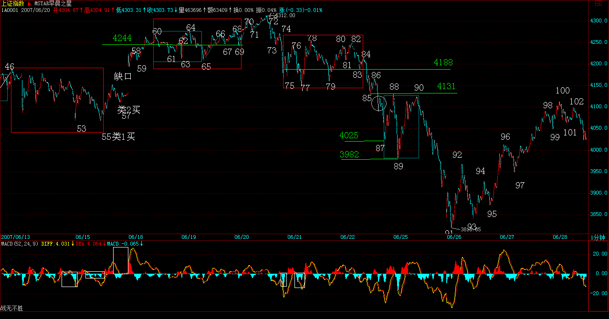
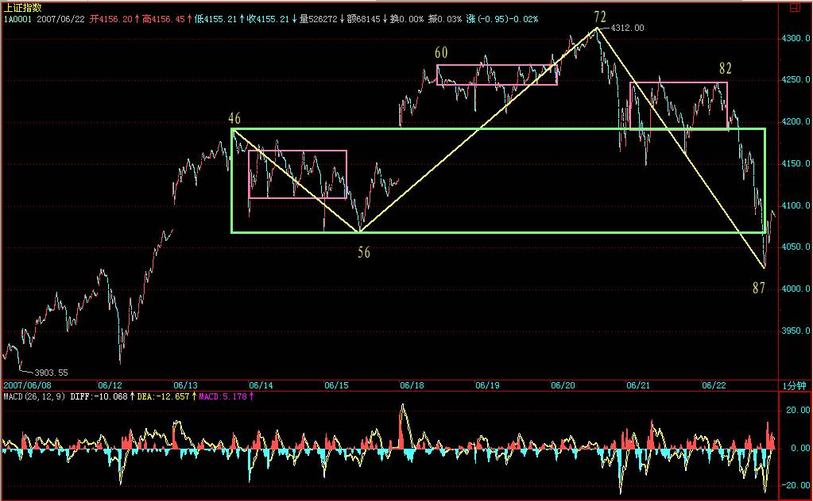
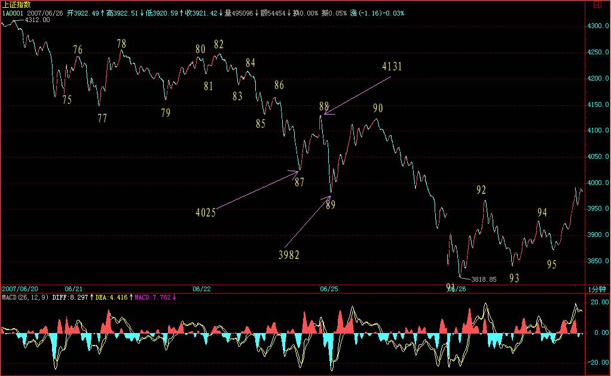
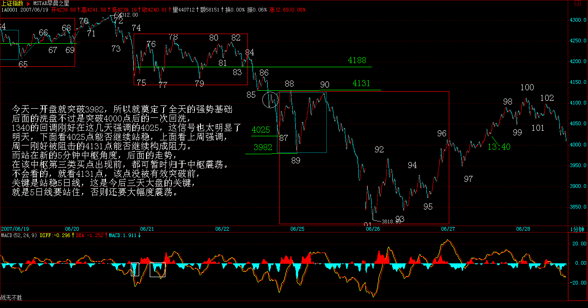
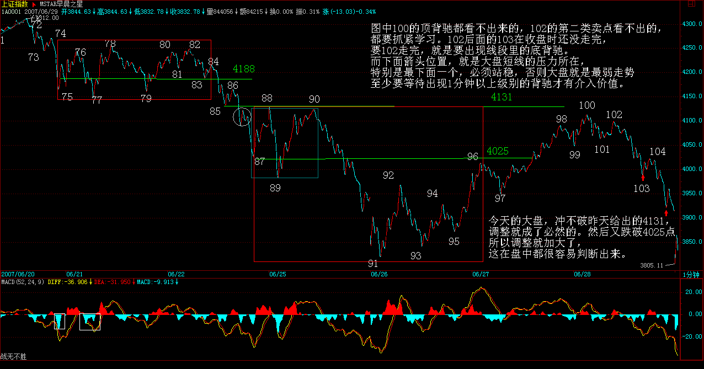

|
 |
教你炒股票61：区间套定位标准图解（分析示范六）
(2007-06-21 08:13:21)
有人经常担心，万一人人都学会本ID的理论，那么本ID的理论还有用吗？问这种问题的，基本就没搞明白本ID的理论。而且，人人都学会本ID的理论，这本来就是一个假命题，像孔男人这样的文科生，本ID从来都觉得他们能学会的机会比较渺茫。注意本ID这里是有定语的，没有打击所有文科生，而是说孔男人这样的文科生。当然，如果有人爱自己往孔男人这样的文科生的套里去，本ID没什么意见。
有些无聊问题总是被提着，诸如中枢的意义是什么？对于一个实际操作者来说，中枢的意义就是没有意义，而没有意义就是最大的意义，因为你只要根据中枢的实际走势去反应，问题的关键是你去看明白走势的分解而不是中枢的意义，更重要的就是根据走势的分解去采取正确的反应。如果孔男人之类的文科生想探讨什么中枢意义，那么就让他们探讨去好了，就如同基督教的神甫千百年来YY上帝的意义一样，对于本ID来说，上帝有什么垃圾意义并不重要，关键是如果真有什么上帝，那么也只是被面首的对象。股票是用来操作的，而不是用来意义的。
还有些人不断地问，为什么1分钟的顶背驰，有时候跌幅很大，有时候很小，究竟什么时候该走？这种问题是典型的垃圾问题。如果你的操作级别是1分钟级别的，那么1分钟的顶背驰你就该走了，至于后面的跌幅是大是小，和你有什么关系？你只要耐心等待市场走出新的1分钟底背驰就可以。反之，如果你的操作级别是月线的，那么1分钟的顶背驰和你有什么关系？你既然已经决定是按月线进出的，那么1分钟级别的所有震荡都是可以接受的，可以忽略的。别说1分钟的，就算这次530所谓的大跌，如果你真是月线级别操作的，看都不用看，这种级别的震荡根本就在月线可忍受的范围内，只有那些如孔男人那样的文科生才会认为本ID的理论只能看1分钟的图，本ID已经多次说过，如果你按年线的级别，那么你比巴菲特还要巴菲特，关键是你有没有这样的耐心。
好了，没必要为孔男人这样的文科生浪费时间，看看下图，一个区间套定位的标准图解。如果上学时学过基本的数学分析课程，应该不难明白区间套定位，如果没学过的，那就费点劲，虽然前面的课程已经反复说过，但当昨天

要比较力度，发现背驰，首先要搞清楚是哪两段比较，其实，只要是围绕一中枢的两段走势都可以比较力度。显然，对于60-65这个1分钟中枢，55-60与65开始的一段之间就可以比较。在实际操作中，65开始的走势，由于没实际走出来，所以在和55-60比较时，都可以先假设是进入背驰段。而当走势实际走出来，一旦力度大于前者，那么就可以断定背驰段不成立，也就不会出现背驰。在没有证据否定背驰之前，就要观察从65开始的一段其内部结构中的背驰情况，这种方法可以逐次下去，这就是区间套的定位方法，这种方法，可以在当下精确地定位走势的转折点。
对于65开始背驰段的内部走势，当下走到69时，并不构成任何背驰，为什么？因为背驰如果没有创新高，是不存在的。所以，只有等70点出现时，大盘才进入真正的背驰危险区。由于69-70段与67-68段比并没有盘整背驰，所以70点并没有走的理由，除非你是按线段以下级别操作的。而71点，构成对66-69这1分钟中枢的第三类买点。按照本ID的理论，其后无非只有两种情况，中枢级别扩展或者走出新的中枢上移。对后者（走出新的中枢上移），一个最基本的要求就是，从71点这第三类买点开始的向上段不能出现盘整背驰；而在实际中，不难发现，71点开始的走势力度明显比不上69-70段，而对于65-66段，69开始的走势力度也明显比不上，这从两者下面对应的MACD红柱子面积之和可以辅助判断。(娇注：盘背比较先最近同向一段再中枢两头）
由此可见，72点这个背驰点的精确定位，是由65开始背驰段的背驰段的背驰段的背驰段构成的，这就构成一个区间套的精确定位，这一切，都可以当下地进行。
（买卖）第一买点
对于实际的操作，72四重背驰点出现后，卖是唯一的选择，而区别只在于卖多少。当然，如果是按5分钟级别以及以下级别操作的，当然就全卖了，因为后面至少会形成5分钟的中枢震荡，实际上，60-69就是一个5分钟中枢。而对于大级别操作的，显然不可能因一个5分钟震荡而清仓，所以可以根据5分钟震荡可以容纳的数量进行对冲操作。小资金的利润率，在相同操作水平下，显然要远高于大资金的，例如像这样的卖点，小资金就可以全仓操作，大资金是不可能的。
（买卖）第二买点
如果说72的判断有点难度，需要知道区间套的精确定位，那么74的第二类卖点，就一点难度都没有了。唯一有点需要分辨的就是，这第二类卖点，同时又是一个1分钟中枢的第三类卖点，究竟哪个中枢？显然不是70-73这个，因为这里需要满足结合律。一个第三类买卖点，至少需要有5段次级别的，前三段构成中枢，第四段离开中枢，第5段构成第三类买卖点。其实，这里的答案很简单，74点是69-72这个中枢的第三类卖点。
也就是说，74点既是一个第二类卖点，又是一个第三类卖点，以前的课程已经说过，一旦出现二、三类买卖点同时出现的情况，往往后面的力度值得关注。(第二、第三类买点重合情况)。实际上，74后面出现更大力度的下跌，这并没有任何奇怪的地方。
对于60-69这个5分钟中枢，69的4244点是一个关键位置，如果在其下出现第三类卖点，那么走势至少将扩展成一个30分钟中枢，调整的幅度与压力就大了。而对于72开始的走势，73很重要，要重新走强，必须冲破73这一点，该点位置恰好也是4244点。因此，短线的4244点十分关键，重新站稳，则大盘将最多是5分钟中枢的延伸震荡，否则即使不演化成5分钟级别的下跌，也将扩展成30分钟级别的中枢震荡。
不管学什么，是否愿意学，首先请先把学的东西搞明白，否则浪费的是自己的时间，还不如不学。本ID的理论，你爱学不学，就像无论你是否相信万有引力，无论你是上帝还是小布什，该存在的依然存在。本ID的理论亦如此，无论任何人学与否，无论你是庄家、管理层还是什么玩意，都不增一分、不减一分，都一样。
 
2007-06-21 15:25:18
如果在看过上面的课程，今天的走势都看不明白不会操作，那你大概要面临两种选择：一、去和孔男人为伍；二、洗心革面、好好学习。上面说到的4244点的技术意义，在今天走势中表露无疑，早上的杀跌补缺口，这次是一个明显的区间套底背驰定位，如果还看不明白，继续加倍努力学习或者放弃孔男人去，自己选择吧。
明天还是这个4244点，站稳就走强，否则继续5分钟的中枢震荡，并且要小心出现第三类卖点。
明天又是周末，利空又准备漫天飞，本ID早在前面说过，这里必须用震荡来化解技术、心理、政策的压力，如果整天还是周一看没消息就跳空，然后继续不断震荡等周五，然后周末等消息，这样轮回下去，是走不出坚定有力的行情的，所以关键还是心态，整个市场的心态必须在震荡中修复。今天最低4147点，和本ID反复说的1/2线4144点相差不远，中线关键还是看这线，不破就是强势。

个股方面，本ID那16只股票的剧本一大早就告诉大家了，本ID说的是16只，已经有8只创新高，今天还3只涨停的。为什么不16只一起来，首先这操作不过来，其次，这样是资金利用率最高的，如果你按照这节奏去轮动操作，对于小资金，你这次反弹的收益率如果少于100%，那你的毛病就大了。为什么要看买卖点，为什么要强调节奏，最终都是为了资金的安全与利用率，这对大资金同样的，而对小资金，掌握了节奏，你的效率更高。
注意，本ID的意思不是你一定要买本ID这16只股票，只是事先告诉并直播本ID的操作节奏，让大家去把握其中资金运用的道理。要有效率，必须有节奏，要有节奏，就首先要把握好买卖点，这里的逻辑关系，请好好思考明白。
今天下午有一个聚会，谈谈心、统一一下思想，必须下了，明早见。
每日解盘
股市里不动脑子只有死路一条
(2007-06-22 08:30:44)
由于要出差，先把这线段图贴出来，否则回来就积累一大堆K线，要分很多张图了。昨天说的很清楚了：“明天还是这个4244点，站稳就走强，否则继续5分钟的中枢震荡，并且要小心出现第三类卖点。”今天的走势在4244点上精确地被再次压制，然后出现大幅度跳水，这些在今天走势的当下都很容易分析。81-82的盘整背驰、84点的第二类卖点，后面走出一个线段的标准下跌，以红箭头所指微型中枢前后出现背驰，然后有87的转折，但这个转折，由于86-87没有背驰，所以，只能是线段下级别的，因此，并不能现在就确定该线段就走完了，除非重新突破85的4131一点。
（下图关于买卖点）

站在中枢的角度，75-84这个5分钟中枢下边在4188点，如果后面的走势不能重新站上去，就要提防形成5分钟第三卖点。而前面已经说过，现在的情况46-87已经构成一个30分钟的中枢，短线的问题只是这中枢的第三段是否完成。其后就是该中枢的一个中枢震荡，该中枢区间在[4067，4192]，该中枢要管大盘一段时间直到出现30分钟的第三类买卖点。


下周走势十分关键，由于关系到月线、特别是季线的收盘，季线如果留出很长上影，则7月到9月的行情压力都很大。所以，对于多方来说，下周的任务就是不让季线留下长上影。只要收在4144点的1/2线上，就是多方最大的胜利。本ID在5月初关于4144点的1/2线要管大盘至少3个月的断言，看来肯定是成立了。个股方面，就看图作业吧，各位可能都发现，本ID一出差，本ID那些股票都走得没什么力，这也怪不了本ID，大家就当成是巧合，希望里面的大小庄家也别老是这样，这样有意思吗？希望这次有点改变。下周收盘都会解盘的，周末，各位腐败去吧。本ID要去机场，先下了.
(解盘附录)(2007-06-25 19:03:22)
今天，留守的人都受苦了。本ID上周五说，本ID一出差，股票就不行了，希望这次有点改变，看来还是没戏。技术上，本ID在周五已经说得很清楚了“因此，并不能现在就确定该线段就走完了，除非重新突破85的4131一点。站在中枢的角度，75-84这个5分钟中枢下边在4188点，如果后面的走势不能重新站上去，就要提防形成5分钟第三卖点。”今天的反抽，就像上周的4244,极端精确地最高到4131点，这就是一个很明确的信号，后面的下跌理所当然。目前最关键的位置是4025点，该位置是新的1分钟中枢的下边，这位置不重新站住，大盘还有继续变坏（注：1分ZD,站不住出1分3卖）。而3982点也是很重要，如果能重新回到上面（娇注1分DD,站住中枢扩展新5分中枢，），那至少将演化成一个新的5分钟中枢。如果连上面这个最基本的条件都不能满足，那大盘就一定以线段的形式下移到形成一个新的1分钟中枢为止，至于这个位置是多少，没必要预测，当下用背驰的方法很容易判断。

每日解盘(2007-06-27 15:29:56) 离开某地前解解今日的盘
(2007-06-27 15:29:56)
前中枢的ZG ZD GG DD 都会构成后期走势的压力和支撑。成为后期走势的观察点。
今天一开盘就突破3982，所以就奠定了全天的强势基础，后面的洗盘不过是突破4000点后的一次回洗，让不坚定分子最后下车，然后就展开一路的上攻。1340的回调刚好在这几天强调的4025，这信号也太明显了。明天，下面看4025点能否继续站稳，上面看上周强调，周一刚好被阻击的4131点能否继续构成阻力。周四，是一个爱震荡的日子，而对周末效应的恐惧，也让明天走势震荡难免。而站在新的5分钟中枢角度，后面的走势，在该中枢第三类买点出现前，都可暂时归于中枢震荡。不会看的，就看4131点，该点没被有效突破前，关键是站稳5日线，这是今后三天大盘的关键，就是5日线要站住，否则还要大幅度震荡。

中线，留给多头去修复季度K线的时间只有两天了，这两天很关键，本ID上周就说过，如果能收在4144点1/2线上是最理想的。两天，什么事都可能发生，尽力而为吧。
个股，本ID要提出抗议了，那十几只股票，本ID不看盘就全面堕落，一看盘就兴奋，这也太不地道了。里面的其他人也要干活，别都那么好吃懒做，这样身体会变胖的。一年半载下来，就会和猪八戒为伍了。本ID什么都不会干，就是该砸的时候砸，该买的时候买，现在，这些股票都是在保持0成本赚筹码的阶段，这种游戏很好玩，各位学会的一定会上瘾的，本ID就喜欢上上下下地抽血，是不是本ID的基因里有些残暴的残留？各位，什么时候也能一起残暴，那才是炒股票而不是被股票炒。
车来了，马上要走，先下，再见。
每日解盘(2007-06-28 15:53:15)
一根筋是不适合玩震荡行情的
(2007-06-28 15:53:15)
应酬前抓紧时间说两句。震荡行情是最容易玩出利润来的，但这绝对不适合一根筋思维的人。大盘的中线走势，在前面6月4日的文章里已经明确说过“而5月初给出的技术面分析依然有效，目前这1/2线已经上移到4144点，深圳成分指数相应位置在13700点，能否最终有效站稳该线，是判断中期走势是否重新趋强的关键。在此之前，大盘走势将以震荡形式逐步消化技术面、政策面的压力。
其中，目前在3600点附近的5月均线将是判断大盘是否正常调整的关键，只要该线不有效跌破，那么大盘的调整在正常的范围内，否则大盘的调整时间将大为增加。”本月的走势，基本就是在这5月均线与1/2线之间的震荡，而7月，这判断依然成立，但要密切注意突破的方向，因为7月时，5月均线将上移，空间压缩，最迟8月初就要选择突破方向了。之前，就是大玩震荡，狠拉狠砸，把利润给洗出来，把差价打出来。
今天的大盘，冲不破昨天给出的4131，调整就成了必然的。然后又跌破4025点，所以调整就加大了，这在盘中都很容易判断出来。
（买卖）
实际操作，特别对待震荡行情，就是要敢卖敢买，该卖一定要卖，反而买却不一定，特别对技术有点问题的，仓位可以控制好。当然，技术没问题的，这里就是天堂，一定要记住本ID的多次忠告：股票都是废纸，只有能弄出差价来才是抽血，否则上涨下跌不过是坐电梯，和你有什么关系？而要弄差价，用中枢震荡的手法，就是最好的，这需要刻苦的学习和练习。

（买卖：第一吗、第二买卖点）
把图弄上来花了点时间，图中100的顶背驰都看不出来的，102的第二类卖点看不出的，都要抓紧学习。102后面的103在收盘时还没走完，要102走完，就是要出现线段里的底背驰。而下面箭头位置，就是大盘短线的压力所在，特别是最下面一个，必须站稳，否则大盘就是最弱走势，至少要等待出现1分钟以上级别的背驰才有介入价值。
忙，晚上又有应酬，下周才能回北京，季K线收得不会太好看了，这中线的大震荡延续时间不会短，学会震荡操作，将让你在这中线大调整中获利良多，好好学吧。多说句废话，中国第一只在德国交易所交易的股票将在7月初挂牌，这是中国第一创投公司的杰作，7月底还有韩国交易所的第一只股票，这两枪打响后，估计私人股权投资要加温了。先下，再见。
附录：
刚打开电脑，上来看看，发现有人对昨天的线段分法有疑问，这问题以前说过，就是关键是看你用多大的精确度。下图中，红箭头处是4022.69，绿箭头处是4022.42，按最严格的标准，精确到小数点后两位，这就没破坏原来的线段，所以就不是新的线段。当然，如果统一按个位数是精确度，直接取整，那么这就等于两处有重合，那按这标准，就可以定义为新线段（像下图一样）。但如果按四舍五入，那前面是4023，后面是4022，就不能这样定义了。
新线段的一个最重要标准就是一定要破坏老线段的结构，例如下跌的线段，后高点一定低于前低点。 为了照顾各位的习惯，也为了简单，以后就统一标准，用直接取整的办法来确认。所以，线段分类就可以改用下图了。
---------------------------------------------------------------------------
注：2007年6月20到7月6日的走势，用严格分段定义后的划分非常清晰，为1分趋势后接更大级别盘5分中枢再接1分趋势区间套，即下跌 +盘+下跌。禅师当时的解盘划分就显得有些混乱。
--------------------- |
|
|
|